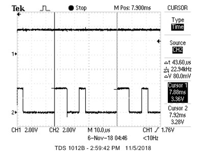
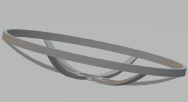
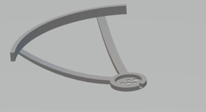
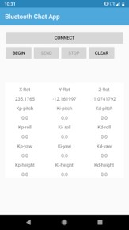
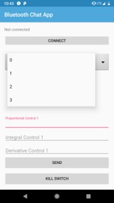
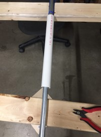
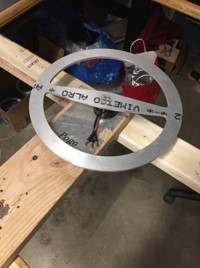
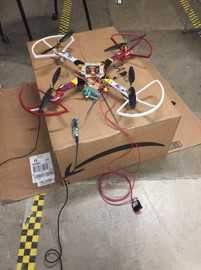

Labhansh Aritwal la375
Adrian Dohmann ahd59
Kenneth Huaman kch95
Vini Tripathii ut33
We created a 3 rotational degree of freedom quadcopter frame. The result was so that when placed on the small surface area of roughly a finger tip, the quadcopter can maintain its stability and recover from perturbations. The four motors increase and decrease in speed according the size and direction of the disturbance so as to minimize the oscillations of the quadcopter frame. The original goal of this project was to create a drone that could hover, but due to safety constraints, we were unable to obtain the necessary control values for the height (the Z-axis) and pivoted to a quadcopter that could self-stabilize in pitch and roll. The main components of this project are the microcontroller (PIC32), ESC’s (electronic speed controllers), motors and two Android phones. One Android sensor acted as a Bluetooth remote and was mainly relevant during the tuning process, the second phone acted as a receiver and sensor. We used the Android sensor, compass orientation, to detect absolute angle orientation with respect to pitch, roll and yaw. (The compass orientation sensor is a software sensor that combines information from the geomagnetic field and accelerometer hardware sensor in the phone to computer the phone’s angle orientation.) The control algorithm used in this project was PID.
It was something that Labhansh came up and we were really thrilled to hear the whole concept. It felt different and unique, and we didn’t know if it would work but we still wanted to do it because it was a fun experiment.
Labhansh - “I came up with this idea 2 years back when I first heard about drones particularly quadcopters. Until then I never knew about them. It didn’t take me much time to find out how they work, specially the part where they use sensors like Accelerometer, Gyroscope, Camera etc etc. It was common knowledge at that time that even the new smartphones are coming with these sensors. So, it just struck me that why not use a phone on the drone. Why to take such a pain to integrate all the sensors when there is a centralized integrated solution in the market (Smartphone). And with that this idea was born”
For this project, we worked with Euler Angles. The choice came down to this or using Quaternions to represent 3d rotations. We chose Euler Angles because of the familiarity and since the phone could precalculate absolute orientation with respect to Euler Angles.
The basic setup is a standard right- hand rule axis, with x lying parallel to the length of the vehicle and positive in a forward direction, y lying parallel to the width and positive to the right(assuming a top down, front first image), and the z axis facing directly down towards the earth. Pitch, Roll, and Yaw therefore correspond to right-hand curls along the y, x, and z axes respectively. This setup allows us to create parallels for the x- quadcopter to the single DOF motor from lab 4.


We will assume a top down view of the quadcopter, with the front end above the bottom. We will then number the arms clockwise starting from the top right as motor 1,2,3,4. These worked as follows:
As can be noted, there exist 4 degrees of freedom for the drone. This requires 4 PID loops to stabilize.
Next, we had to select an initial reference frame for the drone. The drawing presented above is technically only the ‘body’ frame, and an initial reference frame is required in order to determine rotation. To simplify things, we decided on the following, upon startup the measurement device would be kept parallel to the earth and 0 pitch, 0 roll, and 180 yaw would be set as the initial angles. For the entirety of the lab, the desired angle was set as the initial reference frame angles. This was because the initial goal of the lab was for the drone to hover while maintaining angular stability. Theoretically however lateral movement could be accomplished by setting desired angles off 0. For instance moving forward could be accomplished by setting the desired pitch slightly negative so that the vertical thrust would hove a component moving forward. Meanwhile a PID loop on the height would keep the drone from falling.
This is the controller phone that will be in the hands of the user. It simply consists of the App that will be used to communicate with the drone, through bluetooth (other possible media Wi-Fi, Cellular etc).
This duo is the main building blocks of the drone system. The smartphone here becomes the master here. It uses the wireless communication to listen to the commands given by Transmitter-App. Then it has the Mobile App that is responsible to comprehend the commands and to potentially leverage the hardware present on the mobile (Accelerometer, GPS etc.) and pass the sensor values to the microcontroller. It communicates with the Microcontroller through its micro USB port which turns into UART through TTL converter.
The biggest unknown of using a phone as a big sensor, is the latency factor. So it was very important to find out the latency of communication between PIC32 and a typical Android Phone through UART. As per the PIC32's datasheet, max baud rate that can be achieved at 40MHz is 2500000 bits/sec. But in reality this number reduces to 230400 bits per second because the on-board oscillator has very low tolerance in terms of error. By going above 230400, the error in a bit-duration increases to more than 10%, and hence the protocol starts losing data. One way to solve this problem was to install a high tolerance external oscillator. But it was not a trivial task, so we discarded that as a possibility. Hence, we took 230400 bits/sec as our max acceptable baud rate. Needless to mention, an android phone was more than capable to work with this baud rate.
After finding the right baud rate, next step was to find the latency that can occur during a UART transmission; reason being the non-real time nature of android OS that can preempt a UART transmission if need be. To figure this out we tried sending a byte of random data, in an infinite while loop, over UART and observed the Tx line on oscilloscope. As shown in the figure below, the 2 vertical lines show the start of 2 adjacent byte packets.
As our baud rate is 230400, duration between 2 byte-packets should be (1/230400) 43.34 microseconds. It can be clearly seen in the image that delta T is 43.60 microseconds, which is quite close to real time. Hence, it can be concluded that although an android OS is non-real time but it is smart enough to dedicate a complete processor to an infinite while. It will be safe to say that if we can somehow set the priority of our android app to high then UART transmission will become close to real time.
As per our protocol (in a section somewhere below called UART Data Encoding Schema), we needed to send 17 bytes of data from phone to PIC.
17 bytes = 1 byte of control word + 12 bytes of orientation values X,Y,Z + 4 bytes of height value calculated from barometer.
Given we are using a 10 bit UART (2 bits for delimiters and 8 bits payload), for every byte in 17 bytes, we need 2 extra bits. Hence total payload size becomes 170 bits.
Ideal frequency of sensor values from phone to PIC = 230400 / 170 = 1355 Hz.
But we noticed that we couldn't achieve this speed. Something was causing a reduction in the refresh rate. After much debugging, we found out that sensor values on the phone can be read at a maximum rate of 50Hz. This was a major factor that defined our refresh rate. Hence, we became limited to 50Hz to tune our PID.
After achieving a refresh rate, our next step was to test a full blast of sensor values. In other words, we wanted to test if the PIC32 can cope up with the phone's ability to send data quickly. If we allowed the phone to send data in an infinite loop, then it caused the UART to break on PIC32 end. It was caused due an error called BUFFER OVERRUN, which occurs when UART cannot read its buffer as fast as the incoming data. So, the phone was sending data at such a high speed that the PIC could not keep up with it.
To solve this issue, we created a request-response mechanism wherein the phone only sends data once PIC requests it. And every request was only made once all the previously received data was consumed. This potentially was a slow approach but since we were already bound to 50Hz. So, a request-response system didn't harm much.
We wrote a high level library with which we could easily read sensor values from a GY-91 MPU over SPI as quickly as possible within PIC32. We decided to use it only if our phone concept would have failed. Unfortunately, this meant that about 1.5 weeks of tedious coding trying to figure out how to get this poorly documented and awfully laid out MPU-9250 chip to work over SPI was all for nothing. Fortunately, this meant that we never had to deal with this chip again. A quick tangent on the MPU-9250. It consists of a die containing gyroscopes and accelerometers and another die from a different company containing a magnetometer. The thing is advertised as SPI capable, but, when using SPI, the magnetometer can only be accessed as an I2C slave of the first die. The whole thing is poorly, and in some places incorrectly, documented. Whoever cobbled this thing together and advertised it as SPI capable should be fired.
The code for this project consists of a sequence of setup code, followed by a single loop which reads sensor data and then performs PID feedback continuously. The setup code initializes timer2 and sets up OC1-4 to generate PWM signals. It then initializes Protothreads and starts scheduling our only thread. Our main thread initially runs the throttle programming sequence (full throttle 5 seconds, minimum throttle 5 seconds) to set the maximum and minimum throttle of the ESCs and then starts continuously running the sensing and PID loops. The sensing and PID loop consists of requesting data from the phone, interpreting response data based on a control byte in the response, and then running PID feedback loops when it receives sensor data. The response had the potential to be either sensor readings, a kill toggle command, a nop, or the PID parameters for a PID loop. If sensor readings are received, the global variables tracking each value are updated with their new values and then the PID feedback loops are run and the motor PWM signals updated. If the kill toggle is received, the value of the global variable “kill” is toggled, all motors are stopped, and all values used in the PID loops are reset. When kill is set to true, all motors are turned off. If the nop control is received, nothing is done. If any other control byte is received, it is assumed to be PID parameters for the loop numbered with that byte.
In order to prevent the PIC from falling behind sensor data readings from the phone and prevent the UART buffer on the PIC from overflowing, we decided to have the PIC “request” data from the phone by sending a byte and then waiting for the data response from the phone. We established a general scheme of instruction and data encoding for the response from the phone. This data is sent in a 17 byte string, consisting of 4 IEEE 754 format 32 bit floating point numbers sent bytewise, followed by a single “control” byte indicating what data had just been sent and how it should be interpreted. The PIC first converts the received bytes back into floats using a union data structure and then performs actions with the received data, depending in the value of the final control byte. We established control bytes for sensor readings, a kill command, a “nop”, and interpreted any other control byte as indicating PID parameters for the loop of the same number as the byte. The values for the control bytes of sensor, kill, and nop were, with the simple restriction that they be greater than the number of PID loops, chosen arbitrarily as “magic numbers” of 69, 101, and 42, respectively. Data was organized in the following order for each control byte. For sensor data, the four floats indicated X angle, Y angle, Z angle, and altitude, in that order. For kill and nop, the four floats were not used and were simply always zeros. For PID parameter updates, the four floats indicated Kp, Ki, and Kd, with the last being unused.
In order to both make our code scalable to easily add new loops and avoid the need to manually type out the parameters for each individual PID loop, we chose to simply initialize each parameter as an array, with each loop using the values at its specific index into each parameter array. We additionally implemented the PID loop as a function call, which takes in the loop number as its only input. Because of this, we can add and remove loops simply by changing the defined number of loops and run each loop with no additional code or effort. This also conveniently gave us a simple way to indicate which loop each set of PID parameters is for when received over UART. It is worth mentioning that our PID loops had to measure and take into account the time that has elapsed since the previous sensor readings when calculating the differential and integral terms since the loops are not necessarily being run at an exact rate. Time was tracked using Protothreads’ approximate millisecond timing, which is accurate enough for loops being run approximately once every 15-20 ms. After all PID loops are updated, the new PWM values for each motor are calculated as a linear sum of the outputs of each relevant loop, depending on how the motor feeds back to each loop. In our implementation, we numbered the loops for pitch, roll, yaw, and height in order from 0 to 3.
The circuitry for this project was, all things considered, incredibly simple. We used a small board to house the PIC simply out of convenience and used an additional 2 inch solder board to break out the GPIO pins for the UART and 4 PWM connections. There was no fancy electrical witchcraft or arcane circuit wizardry, simply IO connections for interfaced devices.
We powered the whole aircraft with a 3S LiPo with a 2200 mAh rating. The positive output of the battery was wired through a large, hulking, physical kill switch just so that we could quickly and easily shut this death machine down when it went out of control. The battery output was then split with a poorly soldered and impromptu splitter to provide power to all 4 ESCs. Each ESC has a 5V output, so we were able to get two birds stoned at once by connecting the 5V output from one ESC to the input of the small board and power the whole thing with just the one battery.
Four ESCs were used to drive the four brushless DC motors which made up the “copter” portion of our failed quadcopter. These ESCs are driven by 400Hz PWM pulses ranging in on duration from 1ms (for zero throttle) to 2ms (for full throttle). We used pins RB9, RB11, RB15, and RB13 as the PWM outputs to control motors 1-4, respectively. Each ESC has a 3 wire header which contains a 5V ouput, ground, and a PWM input. We chose to use the 5V output from the ESC connected to motor 2 to power the PIC, by connecting this to Vin (which connects to the onboard 5V to 3.3V voltage regulator) on the small board.
We connected the PIC to the phone using a TTL to UART converter. Pins RA1 and RB10 on the PIC were used as RX and TX, respectively, and were connected, along with a common ground, to the appropriate pins (RX to TX and vise versa) on the TTL converter.The TTL converter was then plugged into the phone.
We used an existing quadcopter frame, motors, and propellers that Labhansh had purchased previously for a personal project that never reached fruition. We purchased a new set of matching ESCs to drive the motors and some propeller guards to protect us from the motors. Everything went together as it should. We placed the ESCs on the underside of each arm and set firmly in place with masking tape, for lack of a better attachment method. We attached to phone to the frame by hot gluing some foam padding to the top of the frame and tightening a velcro band around the phone to hold it firmly in place.
Upon preliminary testing of the motor along with recommendation from Professor Land, it was determined that propellers of this size are dangerous when in motion. To mitigate this danger, propeller guards were originally designed in AutoCAD Inventor to be used on the drone. The first version proved to be too big to be made on any of the 3D printers available to us. The second scaled down version only covered the extruding 75 degree angles at the end of any of the arms. This fit in a 3D printer, but unfortunately it proved to be too complex a design to print directly.
 An immediate fix seemed to be modularity. A guard would be printed out in much simpler pieces and then assembled later. Unfortunately we needed the guards immediately to further test the motors. To save time, we purchased propeller guards that would fit on a drone of similar dimensions to ours. Professor Land agreed that we could exclude them from the budget because he wanted us to be safe.
As has been made abundantly clear by now, a critical portion of this project is communication between the phone to the PIC32 via UART. To handle things from the phone’s end, an app was written in android studio in Java so that the necessary information could be sent. As time went on it became evident that PID tuning is best done from UART as well, since during testing it would be hard to program the PIC32 while surrounded by rapidly spinning propellers. To accomplish this, a second app was written to communicate PID parameters and a wireless KILL command to the original app. The app on the phone that received data via bluetooth and transmitted it with sensor data to the PIC32 was referred to as the receiver and the app on the phone that sent these parameters was the sender.
 It was made apparent once the drone was assembled that safely testing and tuning the drone would be a challenge. The earlies design was a wooden structure of a previous year’s design that had free rotation along 1 degree of freedom on a crossbar. This could theoretically allow for testing of pitch and roll, but it proved to be too stiff and unresponsive. The next design involved a section of PVC piping held vertical with a large vice and topped of with a PVC tee. This was to again allow for individual testing of pitch and roll, but it also did not work since the large responses of the initial PID testing made the drone sway violently from side to side. This led to the third and working attempt. It consisted of two long section of two by four supported by two equal height tables. A metal pipe with a pvc pipe inserted partially over was then placed so that the boards would act as support, and was then securely fastened to the boards. The drone was then secured firmly to the pvc with zipties so as to ensure no friction. The design had the added benefit that the planks would restrict vertical motion of the drone.
  The next challenge was to restrict motion to yaw. This involved searching the lab for discarded projects, where we found a metal ring secured to a brushless motor, again secured to a wooden slab. This had excellent free rotation and worked instantly. The final rig would be to test height adjustments/flight. This would be once we had already achieved reasonable stability in the other three angles. We came up with a cardboard box with a rope running from the drone through the top of the box out a side and held by a team member. There was a vertical bar running through the center which made the rope from the top hole only pull with a vertical component. While this setup did work, it did limit the motion of the overall drone, and did not simulate a true flight. As mentioned before, an extra precaution was taken in the form of the hard-kill switch placed between the battery and the esc’s. This would forcibly kill power at the discretion of the user.
As stated above, it proved difficult to test flight with the harness, as it impeded fully free motion of the drone. Free flight was ideal here, but we had to take safety precautions. We found 2 volunteers and tried the following setup. Four people held a tarp beneath the drone, initially not taught when the drone was on the floor during its initialization sequence. One person would record and hold the physical kill switch, free to kill at his discretion, and the last person would hold the sender phone. This last person would send values to the drone to initialize control loops in pitch roll and yaw, before warning the rest of team prior to starting the height control(which initializes flight). This member also has the wireless kill switch. When the drone took off, all members immediately raised the tarp, preparing to catch the drone in a worst case scenario.
We began by setting the integral and derivative control values to zero, and increased the proportional control value until it would oscillate steadily despite disturbances. We then added a small value for the integral control to help it stabilize and then increased the derivative control value until oscillations stopped. We repeated this process for pitch, yaw, and roll until we felt satisfied with the performance of each.
The orientation sensors on the phone only updated at a rate of approximately 50Hz. We found that this was less than ideal for running our PID loops. There was a slight lag noticeable in the derivative term which would result in oscillations if set to high. We were able to make do and get it to function properly, but wish we could get faster readings. We would not say the phone is a non-viable sensor source, but it is certainly not ideal.
During testing, we had two safety mechanisms. We firstly had a wireless kill switch which transmitted a kill signal over bluetooth. This experienced a slight delay, so we decided to add a physical killswitch to cut power to the whole drone. Of course, we usually wore safety goggles when directly testing the drone. With this, we were fairly confident that nothing seriously bad would happen.
After we had tuned PID for pitch, yaw, and roll, we were only left with tuning thrust to hover at a steady height. As mentioned above, we had no rigid testing rig for height tuning. While attempting to tune height, we experienced an accident. We had a small crash which resulted in a motor being destroyed and an ESC being slightly in flames. We happened to have exactly one spare motor and ESC on hand, but that is it. Needless to say, this put us off from any additional height testing, for fear that we would break an irreplaceable part and have nothing to show for the demo. To adjust from the setback, we did have to tune the PID parameters again. This however didn’t take too long. We made a hard pivot and decided to reduce the scope of our project from a full hovering drone to a frame which can self-correct in three rotational degrees of freedom. An additional gimmick was allowing the drone to balance on a finger and a small rod.
After pivoting, we have our final product.
Given the time constraints of the project, the final result was satisfactory. We were able to successfully achieve self-stabilization in pitch, roll, and yaw. Be believe that we produced to tools necessary that, given the proper testing environment and more time, we could have achieved hover as well. The drone was able to move up given sufficient thrust, but would move up at an angle. When we tried to obtain the control values for height, the drone nearly hit one of our members. We agreed that further testing would be unsafe, and pivoted to a 3-degree of freedom self-stabilizing drone frame. This drone did effectively stabilize in 3 rotational axes and would correct for small external disturbances.
We do not recommend that others do this project. Given the time constraints and budget of this project it is difficult to do; given the speed of the blades necessary for uplift and the lack of natural drone testing environments at Cornell, attempting this project can also be very dangerous. That said, there are several things we would do differently if we redid this project. Either the current asymmetric frame would be readjusted to become more symmetric or a different symmetric frame would be used so that the center of mass corresponded to the center of the drone. The phone would be attached with a hard case connected to the frame of the quadcopter instead of velcro, so as to minimize the possibility of the phone shifting without the drone. Instead of attempting to use the barometer sensor on the phone, which has limited accuracy, we would use an ultrasonic distance sensor. We would have several spare motors and ESCs so progress would not be impeded even if a part burned out. Due to the delay in Bluetooth signaling, we may consider an alternative source of remote transmission. Lastly, we would not attempt to make the drone hover in the open and only fly in a safe training environment. The right environment to obtain the control values for height would be a large raised net cage. The netting would both prevent the drone from hurting anyone while also protecting the drone from collisions that could damage it.
The Java app code was written with the help of many open source public domain references, including Android Studio’s Developers Guide, DIY blogs and useful posts on StackOverflow. The C code was largely based off and inspired by the C code written for ECE 4760’s Lab 4: One DOF helicopter. We are not reverse-engineering any design. We did not have to sign a non-disclosure email to get a sample part. From our current understanding, it is not possible to patent the project within the United States due to overlapping claims. Some of our group members are interested in investigating publishing opportunities for the project, but as of now it remains uncertain.
The IEEE Code of Ethics was adhered to during the project. Safety was always a priority in this project. The reason why we pivoted was because it was not possible to safely obtain the PID control values for height. The drone would ascend at in angle and given the necessary speed of the propellers required for flying, there was serious danger that it could collide and hurt someone. In addition to the digital kill switch we also had a physical kill switch because we did not want to take the risk of the delay in bluetooth signalling. Any reference that was consulted, even if it did was not ultimately used, is cited in the Appendix.
There are no relevant legal considerations with regards to FCC Part 15 rules, the FDA or the Federal Motor Vehicle Standards.
The group approves this report for inclusion on the course website.
The group does not approve the video for inclusion on the course youtube channel.
| Part | Price | Source |
|---|---|---|
| Quadcopter Frame | $11.27 | https://www.amazon.in/gp/product/B018VS1VP0/ref=oh_aui_detailpage_o08_s00?ie=UTF8&psc=1 |
| Brushless Motor ESC Propeller Set x 4 | $50.60 | https://www.amazon.in/gp/product/B01BJWLI6C/ref=oh_aui_detailpage_o04_s00?ie=UTF8&psc=1 |
| 3S LiPo battery | $20.99 | https://www.amazon.com/Battery-Helicopter-Quadcopter-Multirotor-EFLB22003S30/dp/B013TK47VK/ref=sr_1_fkmr0_1?s=toys-and-games&ie=UTF8&qid=1538101124&sr=1-1-fkmr0&keywords=Orange+2200mAh+3S+30C%2F60C+Lithium+polymer+battery+Pack+%28LiPo%29 |
| PIC32MX250F128B | $5.00 | http://people.ece.cornell.edu/land/courses/ece4760/labs/f2018/lab5.html |
| MicroStickII | $1.00 | http://people.ece.cornell.edu/land/courses/ece4760/labs/f2018/lab5.html |
| Small Board | $4.00 | http://people.ece.cornell.edu/land/courses/ece4760/labs/f2018/lab5.html |
| 2 inch solder board | $1.00 | http://people.ece.cornell.edu/land/courses/ece4760/labs/f2018/lab5.html |
| Header plug x 15 | $0.75 | http://people.ece.cornell.edu/land/courses/ece4760/labs/f2018/lab5.html |
| Jumper cables x 3 | $0.30 | http://people.ece.cornell.edu/land/courses/ece4760/labs/f2018/lab5.html |
| Total: $118.90 |
void setup() {
Serial.begin(115200); // use the serial port
}
#include "config_1_2_3.h"
#include "pt_cornell_1_2_3.h"
// === Accum macros ============================================================
#define float2Accum(a) ((_Accum)(a))
#define Accum2float(a) ((float)(a))
#define int2Accum(a) ((_Accum)(a))
#define Accum2int(a) ((int)(a))
// === TIMER2 parameters =======================================================
#define TIMER2_PS 32
#define TIMER2_FREQ 400
#define TIMER2_PERIOD (sys_clock / TIMER2_FREQ / TIMER2_PS)
// === thread structures =======================================================
static struct pt pt_serial, pt_input, pt_output;
// === ESC control PWM specific stuff ==========================================
/*
The throttle signal can range from 1ms to 2ms in duration.
pwm_baseline + pwm_minimum ===> 1ms
pwm_baseline + pwm_maximum ===> 2ms
*/
// minimum throttle value (to be added to all PWM values)
const int pwm_baseline = sys_clock / 1000 / TIMER2_PS; // 1ms
// minimum throttle control value
const int pwm_minimum = 0; // 0ms
// maximum throttle control value
const int pwm_maximum = sys_clock / 1000 / TIMER2_PS; // 1ms
// === Data transmitted over UART ==============================================
/*
This is where variables and structures relating to UART communication and
data received over it will live.
*/
//union structs used to combine bytes received over UART
union {
float f;
char b[4];
} u[6];
// control word
char control_word;
//control words for sensor data and kill
#define sensorControlWord 69
#define killControlWord 101
#define nopControlWord 42
// current angles
volatile _Accum angX = 0;
volatile _Accum angY = 0;
volatile _Accum angZ = 0;
volatile _Accum height = 0;
// initial height
volatile _Accum initialHeight = 0;
// desired angle settings
volatile _Accum desired_angX = int2Accum(180);
volatile _Accum desired_angY = 0;
volatile _Accum desired_angZ = 0;
volatile _Accum desired_height = 0;
// kill switch
volatile char kill = 0;
// static thrust value to get the wheels spinning
volatile _Accum thrust = int2Accum(250);
// === PID data ================================================================
/*
We currently have three loops.
Each index into each array of parameters corresponds to a specific loop.
0: pitch
1: roll
2: yaw
3: height
*/
//number of PID loops to run
#define NUM_LOOPS 4
//current values
volatile _Accum current_value[NUM_LOOPS];
//desired values
volatile _Accum desired_value[NUM_LOOPS];
//current error values
volatile _Accum current_error[NUM_LOOPS];
//previous error values
volatile _Accum previous_error[NUM_LOOPS];
//proportional parameters
volatile _Accum Kp[NUM_LOOPS] = {float2Accum(5.5), float2Accum(5.5), 2, 0};
//derivative parameters
volatile _Accum Kd[NUM_LOOPS] = {float2Accum(100.0), float2Accum(100.0), 0, 0};
//integral parameters
volatile _Accum Ki[NUM_LOOPS] = {float2Accum(0.05), float2Accum(0.05), 0, 0};
//proportional control terms
volatile _Accum p_cntl[NUM_LOOPS] = {0, 0, 0, 0};
//differential control terms
volatile _Accum d_cntl[NUM_LOOPS] = {0, 0, 0, 0};
//integral control terms
volatile _Accum i_cntl[NUM_LOOPS] = {0, 0, 0, 0};
//total of control terms
volatile _Accum V_cntl[NUM_LOOPS] = {0, 0, 0, 0};
// time since last reading
volatile _Accum dt;
// time of last reading
volatile _Accum last_time;
// == Helper functions ================================================
void setAllPWM(int pwm_value) {
SetDCOC1PWM(pwm_baseline + pwm_value);
SetDCOC2PWM(pwm_baseline + pwm_value);
SetDCOC3PWM(pwm_baseline + pwm_value);
SetDCOC4PWM(pwm_baseline + pwm_value);
}
// === PID loop and functions =========================================
void PID_loop(int ind) {
// update error and previous error of loop
previous_error[ind] = current_error[ind];
current_error[ind] = current_value[ind] - desired_value[ind];
// update control values
p_cntl[ind] = Kp[ind] * current_error[ind];
d_cntl[ind] = Kd[ind] * ((current_error[ind] - previous_error[ind]) / dt);
i_cntl[ind] += Ki[ind] * (current_error[ind] * dt);
// sum control terms for loop
V_cntl[ind] = p_cntl[ind] + d_cntl[ind] + i_cntl[ind];
}
void runPID() {
// update timing
// Protothreads ms timing should be fine, but may have to set up a separate timer
dt = int2Accum(PT_GET_TIME()) - last_time;
last_time = int2Accum(PT_GET_TIME());
//update current values for PID loops
current_value[0] = -angY; //pitch
current_value[1] = -angZ; //roll
current_value[2] = angX; //yaw
current_value[3] = height; //height
//update desired values for PID loops
desired_value[0] = -desired_angY; //pitch
desired_value[1] = -desired_angZ; //roll
desired_value[2] = desired_angX; //yaw
desired_value[3] = desired_height; //height
//run all PID loops
int i;
for (i = 0; i < NUM_LOOPS; i++) {
PID_loop(i);
}
if (!kill) { // only calculate and update motors if we aren't killed
// calculate new PWM values
int PWM_1 = Accum2int(thrust - V_cntl[3] - V_cntl[0] + V_cntl[1] + V_cntl[2]);
int PWM_2 = Accum2int(thrust - V_cntl[3] + V_cntl[0] + V_cntl[1] - V_cntl[2]);
int PWM_3 = Accum2int(thrust - V_cntl[3] + V_cntl[0] - V_cntl[1] + V_cntl[2]);
int PWM_4 = Accum2int(thrust - V_cntl[3] - V_cntl[0] - V_cntl[1] - V_cntl[2]);
// correct for values over max or under min
PWM_1 = (PWM_1 < pwm_minimum) ? pwm_minimum : (PWM_1 > pwm_maximum) ? pwm_maximum : PWM_1;
PWM_2 = (PWM_2 < pwm_minimum) ? pwm_minimum : (PWM_2 > pwm_maximum) ? pwm_maximum : PWM_2;
PWM_3 = (PWM_3 < pwm_minimum) ? pwm_minimum : (PWM_3 > pwm_maximum) ? pwm_maximum : PWM_3;
PWM_4 = (PWM_4 < pwm_minimum) ? pwm_minimum : (PWM_4 > pwm_maximum) ? pwm_maximum : PWM_4;
// write new PWM values
SetDCOC1PWM(pwm_baseline + PWM_1);
SetDCOC2PWM(pwm_baseline + PWM_2);
SetDCOC3PWM(pwm_baseline + PWM_3);
SetDCOC4PWM(pwm_baseline + PWM_4);
}
}
// === Main thread ===============================================
static PT_THREAD(protothread_serial(struct pt *pt)) {
PT_BEGIN(pt);
static int i;
// program ESC throttle limits at startup
setAllPWM(pwm_maximum); //upper bound
PT_YIELD_TIME_msec(5000);
setAllPWM(pwm_minimum); //lower bound
PT_YIELD_TIME_msec(5000);
while (1) {
#define UART_FLOATS 4
#define UART_LENGTH (UART_FLOATS*4+1)
sprintf(PT_send_buffer, "c");
PT_SPAWN(pt, &pt_output, PutSerialBuffer(&pt_output));
PT_terminate_char = 0;
PT_terminate_count = UART_LENGTH;
PT_terminate_time = 0;
PT_SPAWN(pt, &pt_input, PT_GetMachineBuffer(&pt_input));
for (i = 0; i < UART_FLOATS; i++) {
u[i].b[0] = PT_term_buffer[(4 * i) + 3];
u[i].b[1] = PT_term_buffer[(4 * i) + 2];
u[i].b[2] = PT_term_buffer[(4 * i) + 1];
u[i].b[3] = PT_term_buffer[(4 * i) + 0];
}
control_word = PT_term_buffer[4 * UART_FLOATS];
switch (control_word) {
case sensorControlWord:
{
angX = float2Accum(u[0].f); //X
angY = float2Accum(u[1].f); //Y
angZ = float2Accum(u[2].f); //Z
if (initialHeight == 0) {
initialHeight = float2Accum(u[3].f); //Height
height = 0;
} else {
height = float2Accum(u[3].f) - initialHeight; //Height
}
runPID();
break;
}
case killControlWord:
{
setAllPWM(pwm_minimum);
kill = !kill;
int j;
for (j = 0; j < NUM_LOOPS; j++) {
//proportional parameters
Kp[j] = 0;
//derivative parameters
Kd[j] = 0;
//integral parameters
Ki[j] = 0;
//proportional control terms
p_cntl[j] = 0;
//differential control terms
d_cntl[j] = 0;
//integral control terms
i_cntl[j] = 0;
//total of control terms
V_cntl[j] = 0;
}
break;
}
case nopControlWord:
{
break;
}
default:
{
Kp[control_word] = float2Accum(u[0].f);
Ki[control_word] = float2Accum(u[1].f);
Kd[control_word] = float2Accum(u[2].f);
break;
}
}
} // END WHILE(1)
PT_END(pt);
}
// === Main ======================================================
void main(void) {
ANSELA = 0;
ANSELB = 0;
// === Config timer and output compares to make pulses ========
// set up timer2 to generate the wave period
OpenTimer2(T2_ON | T2_SOURCE_INT | T2_PS_1_32, TIMER2_PERIOD);
ConfigIntTimer2(T2_INT_OFF | T2_INT_PRIOR_2);
mT2ClearIntFlag(); // and clear the interrupt flag
// === Config OC units for PWM ================================
//YELLOW => OC1 => RB15
OpenOC1(OC_ON | OC_TIMER2_SRC | OC_PWM_FAULT_PIN_DISABLE, 0, 0);
// OC1 is PPS group 1, map to RPB15
PPSOutput(1, RPB15, OC1);
//PURPLE => OC2 => RB11
OpenOC2(OC_ON | OC_TIMER2_SRC | OC_PWM_FAULT_PIN_DISABLE, 0, 0);
// OC2 is PPS group 2, map to RPB11
PPSOutput(2, RPB11, OC2);
//BLUE =>OC3 => RB9
OpenOC3(OC_ON | OC_TIMER2_SRC | OC_PWM_FAULT_PIN_DISABLE, 0, 0);
// OC3 is PPS group 4, map to RPB9 (pin 18)
PPSOutput(4, RPB9, OC3);
//GREEN => OC4 => RB13
OpenOC4(OC_ON | OC_TIMER2_SRC | OC_PWM_FAULT_PIN_DISABLE, 0, 0);
// OC4 is PPS group 3, map to RPB13
PPSOutput(3, RPB13, OC4);
// === config the uart, DMA, vref, timer5 ISR ===========
PT_setup();
// === setup system wide interrupts ====================
INTEnableSystemMultiVectoredInt();
// init the threads
PT_INIT(&pt_serial);
srand(1); //I don't think we actually need this
mPORTASetBits(BIT_0); //I assume we need this?
while (1) {
PT_SCHEDULE(protothread_serial(&pt_serial));
}
} // main
// === end ======================================================